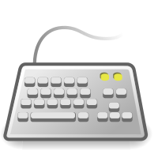
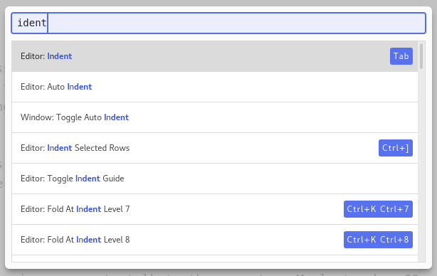
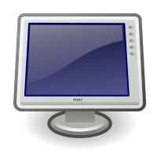
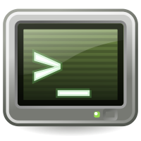

Why do we love the terminal?
The terminal is a tool many programmers use every day. But unusually for a software tool, it hasn't changed much in quite a long time. When we open up a terminal window, it's so that our computer can pretend to be a VT100 from 1978:
VT100 terminal (from Jason Scott on Wikimedia Commons)
{kind=link}
And the way programs talk to it is even older. Terminals are sometimes called TTYs, which is short for teletypewriter:
Teletype model 33 (from AlisonW on Wikimedia Commons)
{kind=link}
Our computers have got massively more powerful since the 70s, and the interfaces are immensely richer. We use many other interfaces alongside the terminal, but it's still important and nothing is about to replace it. Why is this basic interface so great?
The answer has three parts: the keyboard, the terminal and the shell. Each one has a set of advantages we can use in designing other applications and systems.
Keyboard interfaces
The keyboard gives us a glorious power to talk to the computer. My laptop has 83 keys, and my fingers mostly know their own way to the keys I want, with little thought involved. We can also combine keys (like Ctrl-C) to give more meanings. In comparison, moving a mouse to click on things feels very limiting.
Some programmers really care about their keyboards, and spend considerable sums on ergonomic keyboards or special key switches. But even a basic USB or laptop keyboard is a very effective way for your fingers to control the computer.
Mice have their place too: the keyboard would be a clumsy tool for editing photos, for instance. And increasingly we interact with our computers via touchscreens, which have their own advantages and disadvantages. But for many tasks, it's hard to beat fingers on physical keys. Switching between keyboard and mouse (or touchscreen) also slows us down, so if we're already using the keyboard, we like to keep our fingers there.
Applications are starting to recognise the benefits of keyboard interfaces again. I'm writing this post in Atom, which is one of several modern editors with a command palette:
I open the command palette with a keyboard shortcut, it searches the available commands as I type, and it's smart enough to deal with spelling mistakes. Keyboard interfaces are often considered more difficult for new users, but this design can be easier than searching through nested menus or trying to remember dozens of toolbar icons.
The terminal itself
The terminal is that grid of fixed-width characters (i and m take the same space, unlike in normal text), and the interfaces that control it. There are a few great things about the terminal:
Firstly, the interface is established, stable, and predictable. If a program writes '\x1b1;31m' to the terminal, the output will turn red. This 'ANSI escape code' works in Gnome terminal, in Konsole, Xterm, iTerm, and in the web-based terminal output from Travis CI jobs. It will work with a terminal from 10 years ago, and probably one from 10 years in the future. Terminals did once have compatibility issues, and the terminfo database was built to handle this, but today we rarely have to worry about it.
Secondly, the terminal is mostly controlled by in-band signalling—special codes, like the 'switch to red' code above, are written to and read from the terminal. There are a few exceptions, like changing the size of the terminal window, which use other API calls, but mostly it comes down to reading and writing bytes. Those bytes can easily be sent over the network to control a terminal remotely, e.g. over SSH. They can even be recorded.
Thirdly, the terminal is very efficient. My laptop has over 2 million pixels, but a full screen terminal only has around 12500 characters. So using SSH requires only a tiny amount of bandwidth, because it sends characters rather than pixels. And SSH isn't specially designed for poor connections: Mosh is a modern alternative which is.
The shell
There are many programs you can run in a terminal, but most often you're interacting with a 'system shell' such as bash or zsh. You type a command in, press enter, the computer runs it and prompts you for another.
These commands are definitely harder to learn than clicking around files and settings. But if you need to ask for help online, an explanation of what to click is much more work than a command to copy+paste, both for you and for the person answering. And once you know some commands, it's easy to put them into a script to repeat a procedure you need to do often—there's no convenient equivalent for clicking things.
Writing a command-line program to be run from the shell is much less work than designing and creating a GUI (graphical user interface), whatever programming language and toolkit you're using. This is especially true if the program needs to run on different platforms. So there are lots of command line tools with no GUI equivalent—like pip, which installs Python packages, or nikola, which builds this blog. The obvious way to use these tools is in the terminal.
The combination of these three pieces—the keyboard, the terminal API and the command line—along with all the programs written for this environment, means that we'll be typing commands into a terminal for a long time yet, even if it looks arcane and outdated.
Comments
Comments powered by Disqus